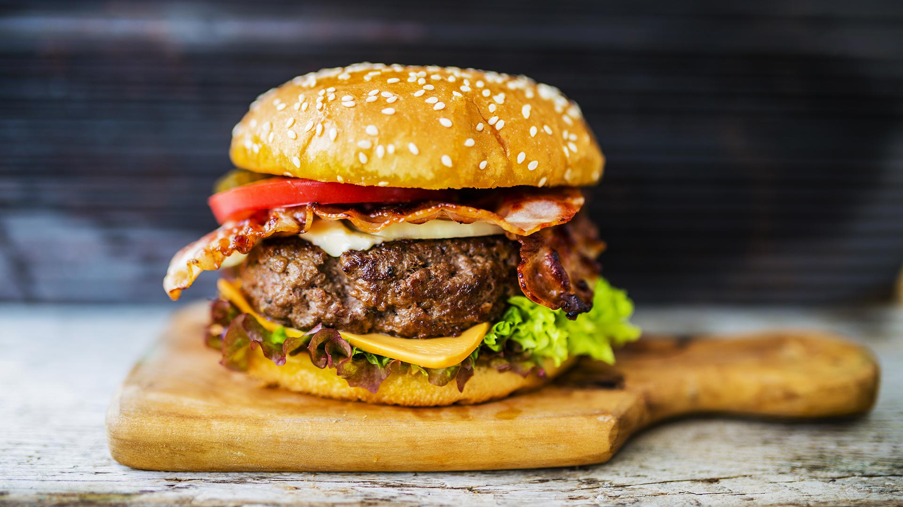

Hamburgers

Description
The best hamburger that goes with beer and potatoes like strawberries with champagne
Ingredients:
- 1 pound ground beef
- 1 teaspoon Worcestershire sauce
- 1 clove garlic, minced
- 1 tablespoon minced onion
- salt and pepper to taste
- 1 (15 ounce) can chili without beans
- 6 hot dog buns
- 6 slices American cheese
- 3 dill pickles, cut into strips lengthwise
Directions:
- Preheat an outdoor grill for high heat, and lightly oil the grate.
- Mix the ground beef, Worcestershire, garlic, onion, salt, and pepper. Shape into 6 thin patties. Cook on the preheated grill until the burgers are cooked to your desired degree of doneness, about 3 minutes per side for well done. An instant-read thermometer inserted into the center should read 160 degrees F (70 degrees C). Place the cheese slices on the burgers during the last minute of cooking.
- Heat the can of chili in a saucepan until hot. Cut the hamburger patties in half and put two halves into a hot dog bun, side by side. Place the pickles in the buns and top with chili.